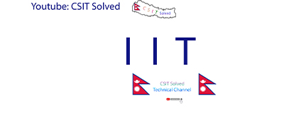

IIT
Introduction to Computer
Computer
A computer is an electronic device, operating under the
control of instructions stored in its own memory that can
accept data (input), process the data according to
specified rules, produce information (output), and store
the information for future use.
A computer is a programmable machine. The two
principal characteristics of computer are:
• It responds to a specific set of instructions in a well-defined
manner.
• It can execute a prerecorded list of instructions ( program)
All general-purpose computers require the following
hardware components.
Central Processing Unit (CPU)
The heart of the
computer, the component that actually executes
instructions.
Memory
Enables a computer to store, at least temporarily,
data and programs.
Input Device
Input devices are the devices which are
used to feed programs and data to the computer. The
input system connects the external environment with the
computer system.
Output Device
The output devices give the results of the
process and computations to the outside world. The
output units accept the results produced by the computer,
convert them into a human readable form and supply
them to the users. The more common output devices are
printers, plotters, display screens, magnetic tape drives
etc.
Mass storage device
Allows a computer to permanently
retain large amounts of data. Common mass storage
devices include disk drives and tape drives.
Characteristics of Computer
1. Word length
2. Speed
3. Storage
4. Accuracy
5. Versatility
6. Automation
7. Deligence
Characteristics of Computer:
Word length
Difference between bit, nibble, byte and wordlength.
Word length is the computing power of computer and varies
as 8, 16, 32 or 64 bits. Longer the word length, more
powerful the computer is.
Speed
Time taken to perform any task by computer is
called the speed of the computer. The speed of computer is
measured in terms of micro or nano-second.
Milliseconds(ms ) = 1/1,000 ; microseconds(µs)= (1/1,000,000), Nanoseconds(ns)=(1/1,000,000,000) ,
Picoseconds(ps) = (1,000,000,000,000)
Storage
Digital data storage is essentially the recording of digital
information in a storage medium, typically by electronic
means.
Computers have their own main memory and auxiliary
memory storage systems which computer use when
needed.
The storage capacity is measured in terms of
Symbol Prefix
k kilo
M mega
G giga
T tera
Accuracy
Computer is the accurate machine with high accuracy and
every calculation is performed with the same accuracy.
It can perform large number of task without errors but if we
feed wrong data, it returns the same wrong information
called GIGO(Garbage In Garbage Out).
Versatility
Versatile means, computer can not only perform calculation
but same computer can perform many different types of Job
depend upon the different program fed to it.
Automation
Automation is the technology by which a process or
procedure is performed with minimal human assistance.
Computers are capable for automation, provided they are
programmed correctly.
Computers can proceed on its own till its completion.
Diligence
Diligence of computer is the capacity of performing same
task repeatedly multiple times without feeling tiredness,
boring, lack of concentration and fatigue with same speed
and accuracy.
Human being suffer from weakness like tiredness, lack of
concentration etc. Human have feelings they become sad,
depressed, bored, and negligent and will reflect on the
work they do.
Human beings can’t perform the same or similar tasks
over and over again with the same precision, accuracy
and enthusiasm as the first time. This will effect the
performance.
Being a machine, a computer doesn’t have any of these
human weaknesses.
History of Computer
Generations of Computer:
▪ Computer generation is a change in technology a
computer is/was being used.
▪ Initially, the generation term was used to distinguish
between varying hardware technologies.
▪ But nowadays, generation includes both hardware and
software, which together make up an entire computer
system.
Following are the main five generations of computers.
S.N. Generation & Description
First Generation
The period of first generation: 1942-1954. Vaccum tube based.
Second Generation
The period of second generation: 1952-1964. Transistor based.
Third Generation
The period of third generation: 1964-1972. Integrated Circuit based.
Fourth Generation
The period of fourth generation: 1972-1990. VLSI microprocessor based.
Fifth Generation
The period of fifth generation: 1990-onwards.ULSI microprocessor based
Classification of Computers
Classification of Computers:(Based on Signal Processing)
Analog Computer
Analog computer is that computer,
which is use to process continuously varying data.
Everything we see and hear is change continuously. This
changeable continuous stream of data is called analog
data. Analog computer can be used in scientific and
industrial applications such as measure the electrical
current, frequency and resistance of capacitor, etc.
Digital Computer
These are high speed electronic
devices. These devices are programmable. They process
data by way of mathematical calculations, comparison,
sorting etc. They accept input and produce output as
discrete signals representing high (on) or low (off) voltage
state of electricity. Numbers, alphabets, symbols are all
represented as a series of 1s and 0s.
Hybrid Computer
Hybrid computer is a digital computer
that accepts analog signals, converts them to digital and
processes them in digital form.
Hybrid computer processes both analog and digital data.
Examples: Computer used in hospitals to measure the
heartbeat of the patient. Devices used in petrol pump.
In scientific applications or in controlling industrial
processes.
The first desktop hybrid computing system was the
Hycomp 250, released by Packard Bell in 1961.
Classification of Computers based on size:
Super Computer
A supercomputer is a type of computer that has the
architecture, resources and components to achieve
massive computing power. Today's supercomputers
consists of tens of thousands of processors that are able
to perform billions and trillions of calculations or
computations per second.
As of 2013, IBM Sequoia is the fastest supercomputer to
date. It has more than 98,000 processors that allow it to
process at a speed of 16,000 trillion calculations per
second.
Mainframe
Mainframe Computers are less costly, small in size and
slower in speed than the super computers.
Used as a storage for large database and serve as a
maximum number of users simultaneously.
millions of instructions are executed simultaneously.
The first successful mainframe computer is invented by
IBM. Mainframe computer’s speed is comparatively less
than Supercomputers.
Minicomputer
A minicomputer is a type of computer that possesses most of
the features and capabilities of a large computer but is smaller
in physical size.
A minicomputer fills the space between the mainframe and
microcomputer.
Minicomputers are mainly used as small or mid-range servers
operating business and scientific applications. However, the
use of the term minicomputer has diminished and has merged
with servers.
A minicomputer may also be called a mid-range computer.
Examples are IBM AS, Prime series, HP 9000, PDP 11, IBM 8000
series.
Mainframe Minicomputer
In mainframe computer, large size of disk is
used.
While in minicomputer, small size of disk is
used.
Mainframe computers have large memory
storage.
While minicomputers have small or less
memory storage than mainframe computer.
The processing speed of mainframe computer
is faster than minicomputer.
While the processing speed of minicomputer is
slower than mainframe computer.
Mainframe computer is costlier than
minicomputers.
Whereas supercomputer's cost is less or it is
Inexpensive.
The first microcomputer was invented by the
team leader Bill Pentz .
The first successful mainframe computer is
invented by IBM.
Mainframe computers support thousand or
millions of users simultaneously.
Whereas minicomputers support hundreds of
users at a time.
Network Computer
A network computer is an inexpensive personal computer
designed for a centrally-managed network where data are
stored and updated on a network server.
Network computer doesn’t have a disk drive, CD-ROM
drive or expansion slots.
A network computer depends on network servers for
processing power and data storage.
Micro computer
1. Desktop/Personal Computer
A desktop computer is a personal computer designed for
regular use at a single location on or near a desk or table due
to its size and power requirements.
The Computer System
The Computer System:
COMPUTER SYSTEM is a collection of entities (hardware,
software and liveware/humanware) that are designed to
receive, process, manage and present information in a
meaningful format.
There are three major components of a computer system:
Computer Hardware
Computer Software
Humanware
COMPONENTS OF COMPUTER SYSTEM
1. Computer Hardware - Are physical parts/ intangible parts
of a computer. e.g. Input devices, output devices, central
processing unit and storage devices
2. Computer Software - also known as programs or
applications. They are classified into two classes namely
- system software and application software
3. Liveware - is the computer user. Also kwon as orgwareor
the humanware. The user commands the computer
system to execute on instructions.
Hardware and software exist together to make up the
actual computer. The humanware component adds in the
human factor in order to bring the whole computer into
functional and productive existence.
Each of these components is necessary in order to enable
meaningful productivity. If installed separately, each may
be useful to an extent but incapable of achieving complete
computing potential. Hardware and software need the
human factor in order to make input and connectivity
possible.
1. Computer Hardware - Are physical parts/ intangible parts
of a computer. e.g. Input devices, output devices, central
processing unit and storage devices
2. Computer Software - also known as programs or
applications. They are classified into two classes namely
- system software and application software
3. Liveware - is the computer user. Also known as
humanware. The user commands the computer system
to execute on instructions.
Computer Hardware
These are computer system components that can be
touched by the human hand. Examples include:
• Display monitor.
• Keyboard.
• Mouse.
• Motherboard.
• Memory modules.
• Disk drive.
These parts are housed within the laptop or desktop system
unit housing. For the desktop, however, the keyboard,
mouse and monitor are attached externally.
▪ The most important piece of hardware is the
microprocessor chip. It is commonly known as the central
processing unit (CPU).
▪ Another important component is the disk drive. This is
where computer data is stored. It is classified as
secondary memory.
▪ Hard disk: This drive is mechanical by design and stores data on
magnetic and metallic platters. Its data is read magnetically by
read/write heads which make it reliant on an uninterrupted supply
of power. A sudden power outage can lead to data loss or drive
failure. It must be used properly for the sake of data integrity and
long lifespan.
▪ Solid state disk: This new type of disk drive stores data on flash
memory chips and is less prone to erratic behavior. It is faster and
reliable even in the event of sudden power outages.
various hardware components inside the system unit.
Another vital part within a system is the motherboard. It
provides communication and direct connectivity to devices
throughout the computer.
Connectivity to a motherboard can be internal or external. Internal
devices that connect to the motherboard include:
▪ Microprocessor (CPU).
▪ Disk drive.
▪ Random access memory (memory modules).
▪ Power supply unit (PSU).
External peripherals that connect to the motherboard include:
▪ Monitor.
▪ Keyboard.
▪ Mouse.
▪ Printer.
Computer Software
The software component refers to the instructions, programs, data,
and protocols which run on top of hardware. It is also retained
temporarily and persistently in primary and secondary hardware
media. The random access memory chip is an example of primary
hardware while the hard disk drive is an example of secondary
hardware.
Software can be divided into following categories:
system
application
malicious
programming
System Software
▪ The system manages other software and devices inside
the computer. The foremost example of system software
is the operating system (OS).
▪ In a typical setup, the operating system is like the
motherboard for software. It is the first thing that is
installed, followed by applications and other software.
Three popular operating systems for traditional
computers include Windows, Mac OS X, and Linux.
▪ Popular mobile operating systems include Android OS,
iPhone OS, Windows Phone OS, and Firefox OS.
Application Software
▪ This is designed for end users to perform a specialized assignment in
order to output useful information.
▪ An example would be a word processing application used to compose
letters or brochures, such as Microsoft Word.
▪ Other popular examples include Adobe Photoshop, Corel Draw, and
AutoCAD.
▪ A collection of application software is bundled in a package that is
commonly known as a software suite. A typical suite includes software for
word processing, presentation, graphic design, and spreadsheet.
▪ Examples include Microsoft Office, OpenOffice, and iWork.
▪ Software is written in computer languages such as Visual Basic, C, and
Java.
Malicious Software
▪ Malware, is short for malicious software, which is a generic term
that refers to exploitative code designed by criminals and black hat
hackers to maim normal operations of a computer. Malware attack
will result in data loss and hacker access to private information.
▪ Affected computers can also be converted into zombies and used
in a bigger mission of criminal activities like launching denial of
service attack and spreading spam.
▪ Malware scripts are delivered to the computer as viruses, trojans,
rootkits, keyloggers, worms, or through email and websites as
adware, spyware, ransomware and scareware.
Programming Software
▪ These are tools used by developers to create all kinds of software
like Windows OS and Word processing. Also called languages,
they are used to write source codes, debug errors, maintain and
create new software for computers and write malicious scripts like
viruses and trojans.
▪ Popular examples of high-level languages are Java, Javascript,
BASIC, PHP, Visual Basic, Visual C++, Visual Basic, Python, Ruby,
Perl, Java.
The Computer System
3. Humanware
▪ The humanware component refers to the person that uses the
computer. More specifically, it is about the individual that makes
hardware and software components productive.
▪ Typically, a great deal of testing is done on software packages and
hardware parts to ensure they enhance the end-user experience to
aid in creating documents, musical and video recordings, and all
forms of raw and finished data.
Applications of computers
Today computers find widespread applications in all activities
of the modern world. Some of the major application areas
include:
Scientific, Engineering and Research
Business
Medicine
Information
Education
Games and Entertainment
Uses of Computers in Education
• Benefits of CBT
• Computer Aided Learning (CAL)
• Distance Learning
• Online Examination
• Online Training Resources
Uses of computers in Medical Field
• Hospital Management System
• Patient History
• Patients Monitoring
• Life Support Systems
• Diagnosis Purpose
Computers in Business
• Marketing
• Stock Exchange
Use of computer at Home
• Computer Games
• Working from Home
• Entertainment
• Information
Computer Architecture
Computer Architecture:
Computer architecture is a science or a set of rules stating
how computer software and hardware are joined together
and interact to make a computer work.
It not only determines how the computer works but also of
which technologies the computer is capable.
Computers continue to be a major part of our lives, and
computer architects continue to develop new and better
programs and technologies.
Computer architecture is a specification describing how
hardware and software technologies interact to create a
computer platform or system.
Similar to making a building by building architect,
computer architecture involves building a computer and all
that goes into a computer system.
Computer architecture consists of three main categories.
System design
This includes all the hardware parts, such as CPU, data
processors, multiprocessors, memory controllers and direct memory
access. This part is the actual computer system.
Instruction set architecture
This includes the CPU’s functions and
capabilities, the CPU’s programming language, data formats, processor
register types and instructions used by computer programmers. This part is
the software/instructions or similar programs.
Microarchitecture
This defines the data processing and storage element or
data paths and how they should be implemented into the instruction set
architecture. These might include storage devices and others.
All these parts go together in a certain order and must be developed in a
pattern so they will function correctly.
Instruction and Data are in the same memory space in Von Neumann
architecture and use single bus to both fetch instructions from memory
and transfer data from one part of a computer to another while Harvard
architecture has separate memory space for data and instruction.
Computer Architecture
Harvard architecture Vs Von Neumann Architecture
The Von Neumann architecture is a theoretical computer design
based on the concept of stored-program where programs and data
are stored in the same memory. The concept was designed by a
mathematician John Von Neumann in 1945 and which presently
serves as the basis of almost all modern computers.
The Harvard architecture was based on the original Harvard Mark I
relay-based computer model which employed separate buses for
data and instructions.
CISC
Pronounced sisk, and stands for Complex Instruction Set Computer. Most PC's use CPU
based on this architecture. For instance Intel and AMD CPU's are based on CISC
architectures.
Typically CISC chips have a large amount of different and complex instructions. The
philosophy behind it is that hardware is always faster than software, therefore one should
make a powerful instructionset, which provides programmers with assembly instructions to
do a lot with short programs.
In common CISC chips are relatively slow (compared to RISC chips) per instruction, but
use little (less than RISC) instructions.
Intel and AMD CPU's are based on CISC architectures.
Typically CISC chips have a large amount of different and complex instructions. The
philosophy behind it is that hardware is always faster than software, therefore one should
make a powerful instruction set, which provides programmers with assembly instructions to
do a lot with short programs.
In common CISC chips are relatively slow (compared to RISC chips) per instruction, but
use little (less than RISC) instructions.
RISC
Pronounced risk, and stands for Reduced Instruction Set Computer. RISC chips evolved
around the mid-1980 as a reaction at CISC chips. The philosophy behind it is that almost
no one uses complex assembly language instructions as used by CISC, and people mostly
use compilers which never use complex instructions. Apple for instance uses RISC chips.
Therefore fewer, simpler and faster instructions would be better, than the large, complex
and slower CISC instructions. However, more instructions are needed to accomplish a
task.
An other advantage of RISC is that - in theory - because of the more simple instructions,
RISC chips require fewer transistors, which makes them easier to design and cheaper to
produce.
Finally, it's easier to write powerful optimised compilers, since fewer instructions exist.
The first RISC projects came from IBM, Stanford, and UC-Berkeley in the
late 70s and early 80s. The IBM 801, Stanford MIPS, and Berkeley RISC
1 and 2 were all designed with a similar philosophy which has become
known as RISC. Certain design features have been characteristic of most
RISC processors:
one cycle execution time: RISC processors have a CPI (clock per
instruction) of one cycle. This is due to the optimization of each instruction
on the CPU and a technique called PIPELINING.
pipelining: a technique that allows for simultaneous execution of parts, or
stages, of instructions to more efficiently process instructions;
large number of registers: the RISC design philosophy generally
incorporates a larger number of registers to prevent in large amounts of
interactions with memory